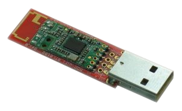
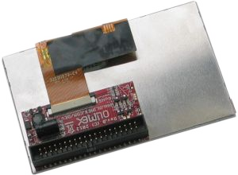
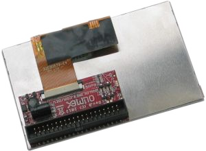

Embedded GUI Framework
Table of Contents
- Overview
- License Information
- Hardware
- Quick Reference
- Objectives
- Obtain Hardware
- Get Debian Running
- Set Up Wireless In Debian
- Communicate to Bluetooth
- Get Serial Over Linux
- Install Programs
- Configure SSH to start on Boot
- Configure Static IP Address
- Hello World Program
- Toggle A LED
- Build Connector for Screen
- Small Gui
- Configure Debian to Communicate to LCD
- Successfully Recieve Input from Screen
- Output to Screen
- Build a Button that does Something on Screen
- Backups
Overview
Embedded GUI Framework
Background:
We live in a world surrounded by computers - from our (arguably excessive) coffee machines to our cell phones and cars, microcomputers play an integral role in our everyday lives. With the cost of electronics rapidly decreasing, and touchscreens becoming commonplace even on low cost consumer products, a unique need has arisen for a unified way of creating user interfaces on embedded devices.
Why we need it:
It is easy for small companies and hobbyists to prototype microcontroller based products, such as environmental sensors and other equipment. However, user interface design is generally left at basic pushbuttons and potentiometers, with at most a simple text display on a serial LCD. The barrier to entry into high end touchscreen interfaces is high: it often involves more development/work than the device itself, and there exist few unified solutions for multi-processor and display targeted builds. The few solutions that do exist are prohibitively expensive: For example, a license of Segger EmWin costs $12,300… per target architecture/CPU! The Embedded GUI Framework aims to be a “drop in” interface for embedded developers to rapidly incorporate touchscreens into projects.
How/Technologies:
The Embedded GUI Framework will be built in C to allow use with the vast majority of embedded toolchains in use. All hardware specific code will be isolated into header files, with preprocessor directives to allow targeted builds for different architectures. As a testing platform, TI Stellaris ARM M4 microprocessors will be used, driving a low cost 480 x 272px TFT touchscreen via a 24 bit parallel interface (the most common interface for LCD drivers).
Features:
- Controls/Widgets
- Pushbutton
- Slider/Fader
- Label/Text control
- Tabs/groups for controls
- Events
- Touchscreen ‘coordinates’
- Button events (‘callback’ / function pointer)
- Encapsulated hardware specific code (to allow easy addition of new architectures/display drivers)
Vital Vio LLC:
Vital Vio is a privately held biomedical and lighting design startup focused on manipulating light to address real world problems by developing innovative methods of delivery. Through precise combination and control of visible light, Vital Vio products utilize light for more than just illumination. Vital Vio units currently focus on the benefits of passive decontamination for human health aspects and environmental safety from microorganisms. This RCOS project will be under the guidance of Vital Vio, and supported in part (office space, some additional benefits) by Vital Vio LLC. The scope of the Embedded GUI Framework does not include any Vital Vio specific features, and is useful to a variety of other applications involving touchscreen interfaces. Vital Vio’s involvement in the project offers a unique and valuable opportunity for an open source project from RCOS to be immediately incorporated into a production product.
License Information
Hardware
A13-OLinuXino-MICRO

Features
- A13 Cortex A8 processor at 1GHz, 3D Mali400 GPU
- 256 MB RAM (128Mbit x 16)
- 5VDC input power supply with own ICs, noise immune design
- 1 USB host
- 1 USB OTG which can power the board
- SD-card connector for booting the Linux image
- VGA video output
- LCD signals available on connector so you still can use LCD if you diasble VGA/HDMI
- Audio output
- Microphone input pads (no connector)
- 1 User key
- 4 Mount holes
- UEXT connectorfor connecting addtional UEXT modules like Zigbee, Bluetooth, Relays, etc
- GPIO connector with 68/74 pins and these signals:
- 17 for adding NAND flash;
- 22 for connecting LCDs;
- 20+4 including 8 GPIOs which can be input, output, interrupt sources;
- 3x I2C;
- 2x UARTs;
- SDIO2 for connectinf SDcards and modules;
- 5 system pins: +5V, +3.3V, GND, RESET, NMI
- Dimensions: 100 x 85 mm (3.950x3.350'')
- Optional low-cost 7" LCD with touchscreen
FAQ
- There is only 1 USB host on the board, how can I connect simultaneously my USB mouse and USB keyboard?
- You should use external USB hub.
- What software is available for the board?
- The software development changes very rapidly. So far we have reports for number of Linux distributions working properly with the MICRO, please visit the WIKI and the GitHub pages of A13-OLinuXino-MICRO to find suitable distributions;additionally you might want to check on the forum for additional help
- I bought A13-LCD7-TS but when I connect it to the A13-OLinuXino-MICRO I receive no image on the display. What do I do wrong?
- The default A13-OLinuXino-MICRO image is set for a VGA display and resolution. To use LCD with A13-OLinuXino-MICRO you need to upload new image with the appropriate settings.
- The download links for the images may be found in the wiki article for A13-OLinuXino.
- What is the operating temperature range of A13-OLinuXino?
- The board works in the commercial temeprature range 0+70C
- Where can I find the Android image for the A13-OLinuXino-MICRO?
- At the moment we haven't tested Android booting from SD card. Android from SD card is currently not officially supported. However note that there are people reporting success getting it to run - head to the Olimex forums for more recent info.
Links
- General
- https://github.com/OLIMEX/OLINUXINO
- https://www.olimex.com/Products/OLinuXino/A13/A13-OLinuXino-MICRO/
- http://linux-sunxi.org/Main_Page - for discussion and community support
- https://www.olimex.com/forum/ - for OLinuXino development discussions
Wireless Dongle

Overview
- The MOD-WIFI-RTL8188 is a USB WiFi module that is supported by the A13-OLinuXino and A13-OLinuXino-MICRO boards.
- It uses the same WiFi board that comes as standard on the A13-OLinuXino-WIFI.
- The WM-294 WiFi board on this module contains the popular RealTek RTL8188CUS single-chip Wireless LAN adapter. There are drivers available for Windows, Linux/Android and Mac, so you aren't limited only to using this module on an A13-OLinuXino board.
USB Wireless LAN Module Features
- Has WM-294 module with RTL8188CUS, IEEE 802.11b/g/n
- Operates in 2.4 GHz frequency bands
- 1x1 MIMO technology improves effective throughput and range over existing 802.11 b/g products
- Data rates up to 150Mbps
- 802.11e-compatible bursting and i standards
- BPSK, QPSK, 16 QAM, 64 QAM modulation schemes
- WEP, TKIP, AES, WPA, and WPA2 hardware encryption schemes
- Standard USB type A connector
- On-board antenna
- 5V/3.3V operation modes via SMD jumper (5V by default)
- 4 test pads for easy tracking of the supply, d-, d+, and GND
- PCB: FR-4, 1.00 mm (0.039"), solder mask, silkscreen component print
- Dimensions: 65.15 × 20.38 mm (2.56 × 0.80")
USB Wireless LAN Module Resources
4.3" LCD Screen
- FPC4034006
- tl-c430ve display
- 4.3" FPC4304006 MP4 MP5 GPS lcd display panel
- Place of Origin: Guangdong, China (Mainland)
- Brand Name: BYD
4.3-inch LCD for A13 OLinuXino, 480x272, with Touch Screen 1
 

Overview
- This is a 4.3-inch LCD with a resistive touch screen and an interface board that has been tested to work with A13 OLinuXino boards.
- It connects to your A13 OLinuXino board by a 2×20-pin connector.
- The display board and the OLinuXino board both have male box headers, so you will need a 40-pin IDC ribbon cable which is sold separately.
A13-OLinuXino LCD Board Features
- TFT Panel:
- Bo Lymin BT043DCNNHHp$ 4.3-inch (480×272) a-Si color TFT-LCD with white LED / CCFL backlight
- 262K colors
- Anti-glare surface
- Resistive touchscreen panel
- 40-pin connector for connection to A13-OLinuXino boards
- 3.3V single power input with built-in power supply circuit
- LCD Controller:
- MCU interface: 8/9/16/18-bit 80/68 series MCU interface
- Display RAM size: 640×240×3×6 bits, e.g. 320×240 two-frame buffer with 262K colors
- Arbitrary display memory start position selection
- 8-bit / 16-bit interface: supports 65K (R5G6B5) / 262K (R6G6B6) color data format
- 9-bit / 18-bit interface: supports 262K (R6G6B6) color data format
Interface Board View
- Note: The A13-OLinuXino boards come with an Android image set up for using a VGA display.
- To use this LCD, you'll need to upload a new image with the appropriate settings.
- A ready-made image (as well as the default VGA image so you can switch back) is available on the A13 OLinuXino Wiki Page (they are intended for 7-inch displays, so be sure also to get the A13-LCD43 script, which adjusts the resolution for this display size).
A13-OLinuXino LCD Board Resources
Quick Reference
Connect to Serial (After configuring rfcomm.conf)
- Initialize Connection
sudo rfcomm connect rfcomm2
- Connect with Screen
sudo screen /dev/rfcomm2 115200
- Login
Communicate via SSH
ssh root@192.168.12.200 -p 22122
Objectives
DONE Obtain Hardware
DONE Get Debian Running
Overview
- I am installing a Debian Image found here: https://www.olimex.com/wiki/A13-OLinuXino-MICRO
- Debian Image Includes:
- GPIO support
- I2C 100kHz WIFI RTL8188CU Ethernet AX88772B
- No X and No TouchScreen support for LCDs
- Debian Image Includes:
Steps
- Download Debian Image
- Unrar Debian Image
unrar e A13_Micro_Debian_1GHz_GPIO_100kHz_I2C_WIFI_USB_LAN_without_X_and_touch_first_release.rar;
- Format SD Card as ext3 (using gparted)
- Copy img file to card
dd bs=4M oflag=sync if=A13_Micro_Debian_1GHz_GPIO_100kHz_I2C_WIFI_USB_LAN_without_X_and_touch_first_release.img of=/dev/mmcblk0
DONE Set Up Wireless In Debian
Steps
- Determine Wireless Device
dmesg
- Found as wlan3
- Configure /etc/network/interfaces as Root
auto wlan3 iface wlan3 inet dhcp wpa-ssid TVCOG wpa-psk COGpass1
- Restart the Networking Service
service networking restart
- Test the Network
ifconfig ping google.com
DONE Communicate to Bluetooth
Connecting
Installation
- Connect to Linvar
Passphrase: 1234
- Edit /etc/bluetooth/rfcomm.conf file
# # RFCOMM configuration file. # rfcomm0 { # Automatically bind the device at startup bind no; # Bluetooth address of the device device 00:12:03:27:71:07; # RFCOMM channel for the connection channel 1; # Description of the connection comment "Example Bluetooth device"; }
- Restart Bluetooth
service bluetooth restart
- Determine the Hardware Address
The hardware address should be replaced with that of your phone. If you don't know the hardware address of your phone yet, you can get it by running:
- Bind the Address
sudo rfcomm bind 0 00:12:03:27:71:07
Links
DONE Get Serial Over Linux
Installation
- Determine hardware a
- Modify /etc/bluetooth/rfcomm.conf as Root
rfcomm2 { # Automatically bind the device at startup bind no; # Bluetooth address of the device device 00:12:03:27:71:07; # RFCOMM channel for the connection channel 1; # Description of the connection comment "Olimex"; }
- Restart Bluetooth
sudo service bluetooth restart
Connecting
- Initialize Connection
sudo rfcomm connect rfcomm2
- Connect with Screen
screen /dev/rfcomm2 115200
- Login
DONE Install Programs
Steps
- Update Packages
apt-get update; apt-get upgrade; apt-get dist-upgrade
- Install Packages
apt-get install aptitude apt-get install emacs apt-get install build-essentials apt-get install pkg-config
DONE Configure SSH to start on Boot
Steps
- Install ssh server
apt-get install openssh-server
- Create or modify the /etc/init.d/sshd init script as follows:
#! /bin/sh # # start/stop the secure shell daemon case "$1" in 'start') # Start the ssh daemon if [ -x /usr/sbin/sshd ]; then echo "starting SSHD daemon" /usr/sbin/sshd & fi ;; 'stop') # Stop the ssh daemon /usr/bin/pkill -x sshd ;; *) echo "usage: /etc/init.d/sshd {start|stop}" ;;
- Check that /etc/rc3.d/S89sshd exists (or any sshd startup script exists) and is a soft link to /etc/init.d/sshd.
- If not, create it using the following command:
ln -s /etc/init.d/sshd /etc/rc3.d/S89sshd
- If not, create it using the following command:
- Determine that ssh is running
service ssh status
- Determine Port Open
netstat -tlpn
- Port is: 22122
- Determine IP Address to connect to
ifconfig
- Connect to ssh
ssh root@192.168.12.128 -p 22122
Debugging
- Check ports being listened on
netstat -an | grep "LISTEN"
DONE Configure Static IP Address
Steps
- Determine Information
ifconfig
- Find:
- address
- netmask
- gateway
- DNS Servers
- Find:
- Modify /etc/network/interfaces as Root
auto wlan3 iface wlan3 inet static wpa-ssid TVCOG wpa-psk COGpass1 address 192.168.12.200 netmask 255.255.255.0 gateway 192.168.12.1
- Modify /etc/resolv.conf as Root
domain techvalleycenterofgravity.com search techvalleycenterofgravity.com nameserver 64.22.32.8 nameserver 64.22.32.9
- Restart Networking as Root
/etc/init.d/networking restart
- Test Results
ifconfig ping google.com
DONE Hello World Program
Source Code
//////////////////////////////////////////////////////////////////////////////// /** * @file hello_world.cpp * @brief Test basic functionality. * * @title Hello World * @author Nicholas Guthrie * @web http//nickguthrie.com * @created June 11, 2013 * * Compile with: g++ -g -o ../../bin/testing/hello_world hello_world.cpp */ //////////////////////////////////////////////////////////////////////////////// //------------------------------------------------------------------ :Libraries: // _ _ _ _ // | | (_) |__ _ _ __ _ _ _(_)___ ___ // | |__| | '_ \ '_/ _` | '_| / -_|_-< // |____|_|_.__/_| \__,_|_| |_\___/__/ // // ----------------------------------------------------------------------------- // Input-Output #include <iostream> /* input-output stream - necessary for cout */ //#include <fstream> /* to use file stream */ using namespace std; /* to not need std:: on all io */ //Strings //#include <string> /* to use strings */ //#include <sstream> /* use strings like cout */ //#include <cstdlib> /* for atoi */ //#include <cctype> /* for atoi */ //#include <vector> //#include <map> //Math //#include <math> /* pow, sqrt and use compile flag -lm */ //#include <algorithm> /* use sort and find */ //--------------------------------------------------------------------- :Global: // ___ _ _ _ // / __| |___| |__ __ _| | // | (_ | / _ \ '_ \/ _` | | // \___|_\___/_.__/\__,_|_| // // ----------------------------------------------------------------------------- //const int EMPTY = -1; //----------------------------------------------------------------- :Prototypes: // ___ _ _ // | _ \_ _ ___| |_ ___| |_ _ _ _ __ ___ ___ // | _/ '_/ _ \ _/ _ \ _| || | '_ \/ -_|_-< // |_| |_| \___/\__\___/\__|\_, | .__/\___/__/ // |__/|_| // //----------------------------------------------------------------------------- int Example_Function(); //----------------------------------------------------------------------- :Main: // __ __ _ // | \/ |__ _(_)_ _ // | |\/| / _` | | ' \ // |_| |_\__,_|_|_||_| // // ----------------------------------------------------------------------------- int main ( int argc, char* argv[] ) { ////////////////////////////// // Variables ////////////////////////////// cout << "hello world" << endl; ////////////////////////////// // Input ////////////////////////////// ////////////////////////////// // Output ////////////////////////////// ////////////////////////////// // Exititing ////////////////////////////// return 0; } //------------------------------------------------------------------ :Functions: // ___ _ _ // | __| _ _ _ __| |_(_)___ _ _ ___ // | _| || | ' \/ _| _| / _ \ ' \(_-< // |_| \_,_|_||_\__|\__|_\___/_||_/__/ // // //----------------------------------------------------------------------------- //////////////////////////////////////////////////////////////////////////////// /** * @brief * @warning * @param[in] * @return */ //////////////////////////////////////////////////////////////////////////////// int Example_Function() { return -1; }
DONE Toggle A LED
Toggle a LED
- Using the Commandline
- Turn it On
echo 1 > /sys/devices/virtual/misc/sun4i-gpio/pin/pg9
- Turn it Off
echo 0 > /sys/devices/virtual/misc/sun4i-gpio/pin/pg9
- Turn it On
- Using C Code
//////////////////////////////////////////////////////////////////////////////// /** * @file gpio.c * @brief Toggle pg9 LED gpio. * * Turns the Status LED on for two seconds, off for two seconds, then exits. * * @title gpio.c * @author Nicholas Guthrie * @created 2013-06-13 * * Compile with: gcc gpio.c -o ../../bin/testing/gpio */ //////////////////////////////////////////////////////////////////////////////// //------------------------------------------------------------------ :Libraries: // _ _ _ _ // | | (_) |__ _ _ __ _ _ _(_)___ ___ // | |__| | '_ \ '_/ _` | '_| / -_|_-< // |____|_|_.__/_| \__,_|_| |_\___/__/ // // ----------------------------------------------------------------------------- #include <stdio.h> #include <fcntl.h> #include <string.h> #include <unistd.h> //for sleep //----------------------------------------------------------------------- :Main: // __ __ _ // | \/ |__ _(_)_ _ // | |\/| / _` | | ' \ // |_| |_\__,_|_|_||_| // // ----------------------------------------------------------------------------- int main() { // Variables char s_0[] = "0"; char s_1[] = "1"; int fd; int num = 0; // Open GPIO Pin if( (fd=open("/sys/devices/virtual/misc/sun4i-gpio/pin/pg9", O_RDWR)) < 0 ) { printf("ERROR Opening file, Exiting.\n"); return 1; } else { printf("Sucessfully opened file.\n"); } // Turn LED On if( write(fd, s_1, strlen(s_1)) < 0 ) { printf(" Error writing s_1, Exiting\n"); } else { printf(" LED ON\n"); } sleep(2); // Turn LED Off if( write(fd, s_0, strlen(s_0)) < 0 ) { printf(" Error writing s_0, Exiting\n"); } else { printf(" LED OFF\n"); } sleep(2); // Close file if( close(fd)<0 ) { printf("ERROR closing file, Exiting.\n"); return 1; } else { printf("Sucessfully closed file.\n"); } }
Build Connector for Screen
Small Gui
Installing XFCE
- Steps
apt-get install --no-install-recommends xorg xfce4 alsa-base alsa-utils; apt-get install --no-install-recommends cpufrequtils gamin xdg-utils; apt-get install --no-install-recommends desktop-base gnome-icon-theme dmz-cursor-theme; apt-get install --no-install-recommends xfce4-terminal xfce4-power-manager xfce4-screenshooter; startx;
- Links
- Installing GUI
http://lcncolinuxino.blogspot.com/p/installing-gui.html- Overview
Optionally if desired, a GUI user interface can be installed. This section describes how to install a small foot print xfce4 user interface.
- Steps
apt-get install --no-install-recommends xorg xfce4 alsa-base alsa-utils; apt-get install --no-install-recommends cpufrequtils gamin xdg-utils; apt-get install --no-install-recommends desktop-base gnome-icon-theme dmz-cursor-theme; apt-get install --no-install-recommends xfce4-terminal xfce4-power-manager xfce4-screenshooter; apt-get install --no-install-recommends thunar-archive-plugin thunar-media-tags-plugin; apt-get install --no-install-recommends xfburn htop squeeze bzip2 zip unzip unrar-free; # Finally start the user interface with: startx;
- Links
- Overview
- Installing GUI
Consider Qt Razorh
Configure Debian to Communicate to LCD
Messing with the script file
- Installation
- Extract A13 tar file
cd bin/ tar -zxvf fex2bin_bin_fex_tools.tar.gz - install libusb
sudo apt-get install libusb-1.0-0-dev
- Build Files
make clean make -k
- Extract A13 tar file
- Usage
- Using bin2fex
- First, get hold of the script.bin file located in the boot loader partition (do this by mounting either the RFSFAT16_BOOTLOADER_00000 from Livesuit, or the actual partition image from the tablet). Place it on the Desktop of your Ubuntu machine. Then, from a terminal on the Desktop, run:
# ./bin2fex script.bin script.fex ../bin/A13_script_files/fex2bin_bin_fex_tools/bin2fex script.bin script.fex
- This converts the script.bin file into script.fex. Here's the output produced - script.fex.
- First, get hold of the script.bin file located in the boot loader partition (do this by mounting either the RFSFAT16_BOOTLOADER_00000 from Livesuit, or the actual partition image from the tablet). Place it on the Desktop of your Ubuntu machine. Then, from a terminal on the Desktop, run:
- Using fex2bin
- To convert back, it's simply the reverse:
# ./fex2bin script.fex script.bin ../bin/A13_script_files/fex2bin_bin_fex_tools/fex2bin script.fex script.bin
- This can then be placed back on the bootloader partition (remember to also overwrite script0.bin).
- To convert back, it's simply the reverse:
- Using bin2fex
Links
- Configuration of hardware in the debian image {Link}
- Tools
- Script file
- The script.bin is a text file with very important configuration parameters like port GPIO assignments, DDR memory parameters, Video resolution etc, by changing these parameters in the script.bin you can configure your Linux without need to re-compile your kernel again and again this is smart way Allwinner provides for tweaking A13 Linux Kernel
- fex
- The fex tool will convert a script.bin file to a text file and back again.
- This allows the easy modification of the settings that are in the script.bin file
- Tools and script files
- A13 script bin and fex tool
- The directory A13_script_files contains:
- script.bin
- the default script with VGA800x600settings
- fex2bin_bin_fex_tools.tar.gz
- tools fex2bin and bin2fex for converting the *.bin script file to *.fex(text file)
- script_GPIO_VGA
- script with VGA800x600settings
- script_GPIO_LCD_800x480
- script with LCD800x480settings
- Script file
- Changing A13-OLinuxino settings to VGA800x600 or LCD800x480
- The default SD card setup is made with settings for VGA 800x600. If you want to switch between VGA 800x600 and LCD800x480 mode then you have to replace the existing script.bin file from the first SD card partitition (note that this partition is FAT - so you can replace the file under Windows or Linux) with the script.bin file from script_GPIO_VGA directory (if you want to change to VGA800x600 mode) or from script_GPIO_LCD_800x480 directory (if you want to change to LCD800x600 mode).
- Establish WIFI connection
- plug in MOD-WIFI-RTL8188 if the board is not A13-OLinuXino-WIFI
type ifconfig -a- Output
lo Link encap:Local Loopback inet addr:127.0.0.1 Mask:255.0.0.0 UP LOOPBACK RUNNING MTU:16436 Metric:1 RX packets:0 errors:0 dropped:0 overruns:0 frame:0 TX packets:0 errors:0 dropped:0 overruns:0 carrier:0 collisions:0 txqueuelen:0 RX bytes:0 (0.0 B) TX bytes:0 (0.0 B) tunl0 Link encap:IPIP Tunnel HWaddr NOARP MTU:1480 Metric:1 RX packets:0 errors:0 dropped:0 overruns:0 frame:0 TX packets:0 errors:0 dropped:0 overruns:0 carrier:0 collisions:0 txqueuelen:0 RX bytes:0 (0.0 B) TX bytes:0 (0.0 B) wlan2 Link encap:Ethernet HWaddr 48:02:2a:eb:21:1c inet addr:192.168.0.229 Bcast:192.168.0.255 Mask:255.255.255.0 UP BROADCAST RUNNING MULTICAST MTU:1500 Metric:1 RX packets:166 errors:0 dropped:726 overruns:0 frame:0 TX packets:7 errors:0 dropped:0 overruns:0 carrier:0 collisions:0 txqueuelen:1000 RX bytes:31361 (30.6 KiB) TX bytes:1248 (1.2 KiB)- and look at your wlan number. In this case we have wlan2
- Output
- open the file /etc/network/interfaces- for example using vi tool
vi /etc/network/interfaces
- and change
auto wlan2 iface wlan2 inet dhcp wpa-ssid YourSSIDname wpa-psk YourWPAkey reboot A13-OLinuXino board
- Chek your connection
ifconfig -a
- if everything is ok you should see something as:
wlan1 Link encap:Ethernet HWaddr 48:02:2a:eb:21:1c inet addr:192.168.0.229 Bcast:192.168.0.255 Mask:255.255.255.0 UP BROADCAST RUNNING MULTICAST MTU:1500 Metric:1 RX packets:166 errors:0 dropped:726 overruns:0 frame:0 TX packets:7 errors:0 dropped:0 overruns:0 carrier:0 collisions:0 txqueuelen:1000 RX bytes:31361 (30.6 KiB) TX bytes:1248 (1.2 KiB)
- if everything is ok you should see something as:
- and change
- plug in MOD-WIFI-RTL8188 if the board is not A13-OLinuXino-WIFI
- Establish ethernet connection using USB-ETHERNET adapter recommended supported adapter USB-ETHERNET-AX88772B
- plug in USB-ETHERNET-AX88772B adapter
- type
ifconfig -a
- you should see something like this
eth1 Link encap:Ethernet HWaddr 00:80:80:9a:4a:63 inet addr:192.168.0.113 Bcast:192.168.0.255 Mask:255.255.255.0 UP BROADCAST RUNNING MULTICAST MTU:1500 Metric:1 RX packets:58 errors:0 dropped:0 overruns:0 frame:0 TX packets:4 errors:0 dropped:0 overruns:0 carrier:0 collisions:0 txqueuelen:1000 RX bytes:7852 (7.6 KiB) TX bytes:510 (510.0 B) lo Link encap:Local Loopback inet addr:127.0.0.1 Mask:255.0.0.0 UP LOOPBACK RUNNING MTU:16436 Metric:1 RX packets:0 errors:0 dropped:0 overruns:0 frame:0 TX packets:0 errors:0 dropped:0 overruns:0 carrier:0 collisions:0 txqueuelen:0 RX bytes:0 (0.0 B) TX bytes:0 (0.0 B) tunl0 Link encap:IPIP Tunnel HWaddr NOARP MTU:1480 Metric:1 RX packets:0 errors:0 dropped:0 overruns:0 frame:0 TX packets:0 errors:0 dropped:0 overruns:0 carrier:0 collisions:0 txqueuelen:0 RX bytes:0 (0.0 B) TX bytes:0 (0.0 B)- look at your eth number. In this case we have eth1
- you should see something like this
- open the file /etc/network/interfaces- for example using vi tool
vi /etc/network/interfaces
- and change the following rows
auto eth1 iface eth1 inet dhcp where eth1 is the interface number reboot A13-OLinuXino board
- or type ifup eth1
- and change the following rows
- Check your connection
ifconfig -a
- if everything is ok you should see something as:
eth1 Link encap:Ethernet HWaddr 00:80:80:9a:4a:63 inet addr:192.168.0.113 Bcast:192.168.0.255 Mask:255.255.255.0 UP BROADCAST RUNNING MULTICAST MTU:1500 Metric:1 RX packets:725 errors:0 dropped:0 overruns:0 frame:0 TX packets:10 errors:0 dropped:0 overruns:0 carrier:0 collisions:0 txqueuelen:1000 RX bytes:77056 (75.2 KiB) TX bytes:1686 (1.6 KiB)
- if everything is ok you should see something as:
- GPIO changing
- lsmod
type lsmod- if sun4i-gpio is present - OK
- unless type modprobe sun4i-gpio
- go to /sys/devices/virtual/misc/sun4i-gpio/pins and type ls
- list of supported pins will be shown
- example for port reading:
cat pe4 read PortE4 the result should be 0 or 1 example for port writing: echo 1 > pg9 - turn on LED
- Changing A13 GPIO direction
- extract fex2bin_bin2fex_tools on linux machine
sudo su cd fex2bin_bin2fex_tools directory mount /dev/sdx1 /mnt/sd # mount first partitition on SD card ./bin2fex /mnt/sd/script.bin > /mnt/sd/script_test.fex # convert bin file to fex gedit /mnt/sd/script_test.fex
- extract fex2bin_bin2fex_tools on linux machine
- GPIOs are defined in the end.
- where
Pxx<mode><pull><drive><data> mode 0-7, 0=input, 1=ouput, 2-7 I/O function pull 0=none, 1=up, 2=down drive 0-3, I/O drive level data - data output - logical 0 or 1
- for example: if you want to change GPIO direction then change first parameter after port name
gpio_pin_8 = port:PE08<0><default><default><default>make PE8 input gpio_pin_8 = port:PE08<1><default><default><default>make PE8 output
- save and exit
- ./fex2bin /mnt/sd/script_test.fex > /mnt/sd/script.bin- convert fex to bin
- where
- lsmod
- Tools
- fex2bin and bin2fex - script.bin {Link}
- Overview
- During the boot process, the processor reads a file called script.bin, located in the bootloader (nanda) partition. This file contains all of the processor configuration details (such as pin functions, voltages, clock frequencies, memory configuration etc) and is essential to the correct operation of the tablet. The purpose of this file should be distinguished from that of build.prop, located in /system/build.prop. The latter is a configuration for Android, once it's started. script.bin is configuration for the processor.
- Note that there is also a file in the bootloader partition called script0.bin - this is a backup and must be identical to script.bin.
- For more information on the boot process and the function of script.bin, have a look at these links:
- http://rhombus-tech.net/allwinner_a10/a10_boot_process/
- http://elinux.org/Hack_A10_devices
- http://www.cnx-software.com/2012/05/06/editing-allwinner-a10-board-configuration-files-script-bin/
- http://linux-sunxi.org/Sunxi-tools
- The second link above shows a really neat trick where the pins normally intended for interfacing with the SD card are remapped to a UART port, so you can get a serial port by connecting to the SD card slot!
- The script.bin file is actually the binary equivalent of the COMMON_SYS_CONFIG100000 file found in the unpacked Livesuit image. The human-readable version is called a "FEX" file, since that's the extension used by some conversion programs. There are a couple of tools available which can convert between the binary and FEX formats, and these are described below. This - http://linux-sunxi.org/Fex_Guide - is a description of the sections in the FEX file.
- (There is an online version of these tools available at https://www.miniand.com/tools/fexc, but I couldn't get it to work.)
- Installation
- To get the tools, go to the git repository at https://github.com/linux-sunxi/sunxi-tools/ and download the ZIP file (called sunxi-tools-master.zip). Extract this, and place the folder on the Desktop of your Linux machine. Open a terminal, cd to the folder, then run
sudo apt-get install libusb-1.0-0-dev
- (this installs libusb, which is required for compilation). Then type make which should compile the files. This creates two programs (actually it creates a lot more, but these are the only two we're interested in) called bin2fex and fex2bin.
- To get the tools, go to the git repository at https://github.com/linux-sunxi/sunxi-tools/ and download the ZIP file (called sunxi-tools-master.zip). Extract this, and place the folder on the Desktop of your Linux machine. Open a terminal, cd to the folder, then run
- Using bin2fex
- First, get hold of the script.bin file located in the boot loader partition (do this by mounting either the RFSFAT16_BOOTLOADER_00000 from Livesuit, or the actual partition image from the tablet). Place it on the Desktop of your Ubuntu machine. Then, from a terminal on the Desktop, run:
sunxi-tools-master/bin2fex script.bin script.fex
- This converts the script.bin file into script.fex. Here's the output produced - script.fex.
- First, get hold of the script.bin file located in the boot loader partition (do this by mounting either the RFSFAT16_BOOTLOADER_00000 from Livesuit, or the actual partition image from the tablet). Place it on the Desktop of your Ubuntu machine. Then, from a terminal on the Desktop, run:
- Using fex2bin
- To convert back, it's simply the reverse:
sunxi-tools-master/fex2bin script.fex script.bin
- This can then be placed back on the bootloader partition (remember to also overwrite script0.bin).
- To convert back, it's simply the reverse:
- Using fex2bin on the COMMON_SYS_CONFIG100000 LiveSuit file
- You can use fex2bin to convert the COMMON_SYS_CONFIG100000 file from the unpacked LiveSuit image into a script.bin file. However, I initially got an error saying "E: CONFIG:696: invalid character at 27" or similar (which means line 696, character 27). Looking at the file, it turned out there were quotes missing at a certain point. Here's the original part of the file:
[msc_feature] vendor_name =USB 2.0 product_name =USB Flash Driver To get it to convert properly, I put quotes as follows: [msc_feature] vendor_name ="USB 2.0" product_name ="USB Flash Driver"
- I'm not sure why quotes were missed out here, since they're present everywhere else.
- You can use fex2bin to convert the COMMON_SYS_CONFIG100000 file from the unpacked LiveSuit image into a script.bin file. However, I initially got an error saying "E: CONFIG:696: invalid character at 27" or similar (which means line 696, character 27). Looking at the file, it turned out there were quotes missing at a certain point. Here's the original part of the file:
- Which version ends up on the tablet?
- If you're eagle-eyed, you may notice something at this point. In the unpacked LiveSuit files, there are essentially two copies of script.bin. One is the human-readable COMMON_SYS_CONFIG100000 file, the other is the script.bin located within the RFSFAT16_BOOTLOADER_00000 image file. The two copies are identical (if you use fex2bin/bin2fex to convert between them, and remember the quotation marks). So, which one actually ends up on the tablet?
- I made a slight modification to one, then the other, packing and burning a complete LiveSuit image each time, and determined that it's the script.bin inside RFSFAT16_BOOTLOADER_00000 which ends up on the tablet (hardly surprising, since RFSFAT16_BOOTLOADER_00000 is a byte-for-byte copy of the nanda tablet partition). To be on the safe side, I would still ensure that COMMON_SYS_CONFIG100000 is identical to the script.bin file - maybe LiveSuit uses COMMON_SYS_CONFIG100000 for its own initial configuration, or something.
- Overview
- imx233-olinuxino-with-lcd-4-3-and-touchscreen {Link}
- Product Info {Link}
- Changing A13-OLinuxino settings to VGA800x600 or LCD800x480 {Link}
Successfully Recieve Input from Screen
Output to Screen
Build a Button that does Something on Screen
Backups
Backup the SD Card
Steps
- Backup
- Navigate to backup directoryhttp://raspberrypi.stackexchange.com/questions/311/how-do-i-backup-my-raspberry-pi
cd BAK/ - connect card to linux, unmounted
- copy card contents with dd
sudo dd if=/dev/mmcblk0 | gzip > ./debian_configured_v1.image.gz
- Navigate to backup directoryhttp://raspberrypi.stackexchange.com/questions/311/how-do-i-backup-my-raspberry-pi
- Restore
- insert unmounted card
- unzip to card
sudo gzip -dc /path/to/debian_configured_v1.image.gz | dd of=/dev/mmcblk0
Links
- How do I make a Backup of my Rasberry Pi {Link}
- Make a full backup of the image
- If you are running linux then you can use the dd command to make a full backup of the image:
dd if=/dev/sdx of=/path/to/image
- or for compression:
dd if=/dev/sdx | gzip > /path/to/image.gz - Where sdx is your SD card.
- If you are running linux then you can use the dd command to make a full backup of the image:
- To restore the backup you reverse the commands:
- Uncompressed
dd if=/path/to/image of=/dev/sdx
- or when compressed:
gzip -dc /path/to/image.gz | dd of=/dev/sdx
- Uncompressed
- Make a full backup of the image